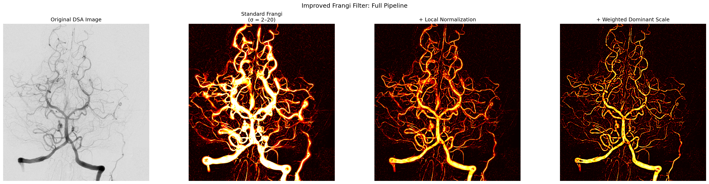

Upload an angiography image to see the improved Frangi vesselness filter
in action: local intensity normalization (S3) and weighted dominant scale
filtering. Runs the exact Python filter in your browser via
Pyodide — no data leaves your machine.
View on GitHub
Drop an image here or click to upload

Left to right: Original DSA image, Standard Frangi, + Local Normalization (S3), + S3 + Weighted Dominant Scale filtering.
Upload your own image above to see these results interactively.